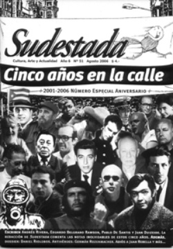

Buscar
Ricardo Napurí y la entrevista con el Che
El triunfo revolucionario en Cuba fue la mecha que encendió América Latina a finales de los sesenta. El peruano Ricardo Napurí fue uno de los tantos militantes del continente que decidió pasar de la observación a la acción para protagonizar un intento guerrillero en su país. En esta entrevista con Sudestada, Napurí recuerda el origen de aquella decisión, tomada durante una breve reunión con el Che a pocas horas del triunfo en La Habana, en aquellos tiempos urgentes donde todo parecía al alcance de la mano.
Edición N° 51
Agosto 2006
Revista bimensual
Comprar edición impresaSumario
- Revista Sudestada: Cinco años en la calle
- Escriben los amigos
- Daniel Riolobos: El enigma de... la voz
- Eduardo Belgrano Rawson: Pacheco no fue
- Germán Rozenmacher: escritor, periodista, dramaturgo.
- Juan Pablo Rebella: Gracias por el cine
- Ricardo Napurí y la entrevista con el Che
Compartir Articulo
La voz, del otro lado del teléfono, suena pausada y, por un instante, misteriosa. Ricardo Napurí indica una dirección para realizar la entrevista y remata con un "muy bien". El tono de sus palabras reúne los matices latinoamericanos que la historia personal de este hombre de 81 años vivió y revisará de forma crítica y lúcida.
Sentados en una oficina de la Editorial Herramienta, Napurí aclara que es periodista y regala un consejo: "En una entrevista no hay que hacer más de cinco preguntas, porque sino todo lo que se habla no entra". Por eso, antes de cualquier pregunta, inquiere sobre qué parte de su historia hablará. "Toda mi historia no la podemos contar", dice. Tiene razón. No alcanzarían las páginas de esta revista para relatar la vida de un joven que a los 13 años era minero en Perú y decidió ingresar al ejército por necesidad: un sueldo que le permitiera ascender socialmente.
"Yo era teniente de aviación -recuerda- especializado en pilotaje bombardero y me ordenaron bombardear la rebelión de la izquierda del partido aprista, en octubre de 1948 y me negué por razones humanitarias, porque no tenían formación política todavía. Me hicieron consejo de guerra y me deportaron".
Al llegar a la Argentina, se tropezó con Silvio Frondizi, quien lo ayudó a salir de la cárcel. Juntos formaron el MIR-Práxis, un centro político donde Napurí se formó en el marxismo. A todo esto, se desempeñaba como periodista en el diario La Razón y secretario de la comisión interna del matutino.
Frente a la pregunta sobre su llegada a la Cuba socialista, Napurí explica: "En el año 1959, cuando se produjo el desembarco del Granma, formamos un grupo de apoyo a los rebeldes, que a los dieciocho meses terminaron tomando el poder". Luego de la entrada a La Habana, el Che fletó un avión hacia Argentina para trasladar a su madre, a uno de sus hermanos y "a veinte o treinta personas que estuvimos comprometidas".
"Así llegué a Cuba el 9 de enero de 1959 -explica-. De ese grupo de treinta periodistas yo era el único que tenía interés en escuchar al Che y pasar a algún compromiso. El resto fue a cumplir su función. Yo era militante marxista y dije: 'Vamos a ver qué es la revolución cubana y qué sale de, lo que podríamos llamar, un acuerdo bilateral con el Che'. Y el Che me dijo: 'No hay que escribir nada, tienes que ir a impulsar un movimiento insurreccional en Perú, guerrillero o no'".
Ahora, este hombre de ojos pequeños, ex diputado y senador en su Perú natal, deportado en 1978 hacia Argentina, se dejará llevar por una parte de su vida, que todavía tiene a la revolución como objetivo principal.
¿El Che le dice lo de la guerrilla en Perú, el primer día luego de entrar a La Habana?
La constancia es una foto en la que estoy con él. Estoy con cuello y él está todo sucio, porque acaba de entrar. Me dijo: "Hay que hacer la revolución por todos lados". Esto es muy importante, porque hay mucha gente que cree que la idea de la exportación de la revolución es más tardía. En el caso del Che, que lo compromete también a Fidel, estaba en su concepción de origen. Él era un internacionalista primario, diríamos desde Guatemala. Se fue elaborando en un proceso de la realidad que le imponía respuestas y respondía bien. Cuando yo lo conocí era el semi-Che, a pesar de que había sido comandante y era uno de los victoriosos de la revolución y su pensamiento estaba formándose como socialista y marxista. Revolucionario era, pero su pensamiento socialista y marxista se estaba elaborando en esas condiciones particulares de la interacción entre la realidad que le imponía respuestas. Y él, respondía macanudo. Porque era, incluso, inteligente y medio genial, y tenía la voluntad revolucionaria de construir el socialismo en el mundo...
La nota completa en la edición gráfica de Sudestada Nº51
Comentarios
Leandro Albani
Articulos más vistos


LIBRERÍA SUDESTADA

Colección infantil

Distribuidora de Libros

Suscripción

Sudestada en URUGUAY

Otros articulos de esta edición
 Antihéroes
Antihéroes
Germán Rozenmacher: escritor, periodista, dramaturgo.
Hace 35 años, el 6 de agosto de 1971, moría Germán Rozenmacher. Uno de los narradores y dramaturgos que en ...
 Dossier
Dossier
Daniel Riolobos: El enigma de... la voz
Fue el más grande cantante de boleros de la historia de este país y una de las voces más exquisitas ...
Juan Pablo Rebella: Gracias por el cine
El jueves 6 de julio nos sorprendió con una noticia tan triste como inesperada: Juan Pablo Rebella se había suicidado. ...
 Ficción
Ficción
Eduardo Belgrano Rawson: Pacheco no fue
Que de dónde sacaba yo esas basuras, me preguntó un día mi abuela. Que ella me había llenado de historias ...
 Nota de tapa
Nota de tapa
Revista Sudestada: Cinco años en la calle
Un repaso por las tapas más influyentes de la publicación, un recuerdo para entender el presente y un intento de ...
 Editorial
Editorial
Escriben los amigos
(Nuestra publicación cumple cinco años de vida, y ya es hora de mirar hacia atrás para recordar todas las dificultades ...